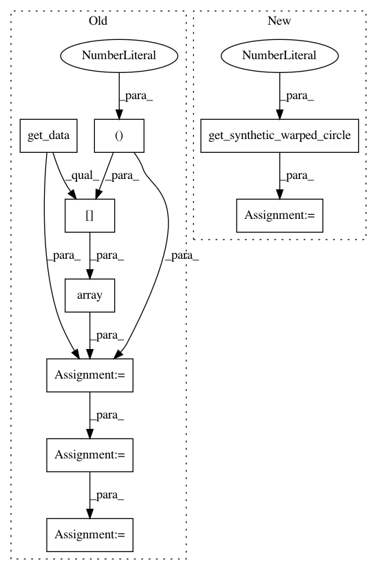

b67ace1dca1e2fd6511ef6e05923762b1b569b1d,dipy/align/tests/test_imwarp.py,,test_em_2d,#,674
Before Change
img, gtab = read_sherbrooke_3shell()
data = np.array(img.get_data()[..., 0], dtype = floating)
static = data[:,:,30]
moving = data[:,:,33]
moving = (moving-moving.min())/(moving.max() - moving.min())
static = (static-static.min())/(static.max() - static.min())
//Configure the metric
smooth=25.0
After Change
one.
"""
moving, static = get_synthetic_warped_circle(1)
//Configure the metric
smooth=25.0
inner_iter=20
In pattern: SUPERPATTERN
Frequency: 4
Non-data size: 9
Instances
Project Name: nipy/dipy
Commit Name: b67ace1dca1e2fd6511ef6e05923762b1b569b1d
Time: 2014-04-13
Author: jomaroceguedag@gmail.com
File Name: dipy/align/tests/test_imwarp.py
Class Name:
Method Name: test_em_2d
Project Name: nipy/dipy
Commit Name: b67ace1dca1e2fd6511ef6e05923762b1b569b1d
Time: 2014-04-13
Author: jomaroceguedag@gmail.com
File Name: dipy/align/tests/test_imwarp.py
Class Name:
Method Name: test_cc_2d
Project Name: nipy/dipy
Commit Name: b67ace1dca1e2fd6511ef6e05923762b1b569b1d
Time: 2014-04-13
Author: jomaroceguedag@gmail.com
File Name: dipy/align/tests/test_imwarp.py
Class Name:
Method Name: test_ssd_3d
Project Name: nipy/dipy
Commit Name: b67ace1dca1e2fd6511ef6e05923762b1b569b1d
Time: 2014-04-13
Author: jomaroceguedag@gmail.com
File Name: dipy/align/tests/test_imwarp.py
Class Name:
Method Name: test_cc_3d